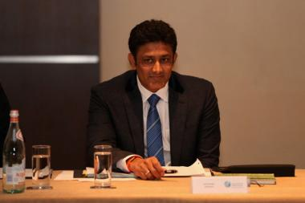

Finally, the BCCI has chosen Anil Kumble as India’s coach

This is the first time country’s top cricketers – Sachin Tendulkar, Sourav Ganguly and VVS Laxman – were directly involved in selection of a coach, which certainly augurs well for the game.